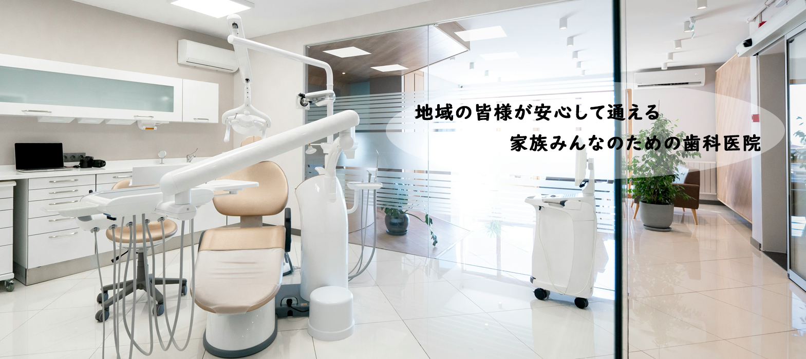
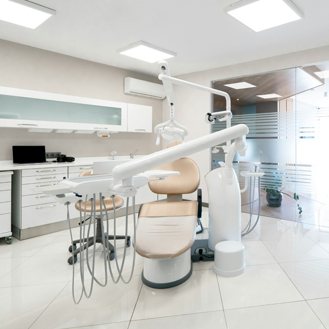
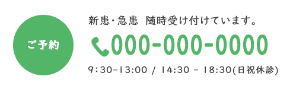

sawayaka dental clinic


むし歯や歯周病の治療を行い
患者さんの健康な歯を守るための
基本的なケアを提供します。
痛みを抑えた治療を心がけ
できるだけ歯を残す治療を大切にしています
・むし歯の治療・詰め物・かぶせ物
・歯周病の治療・歯石除去
・神経の治療（根管治療）
お子さまの歯の健康を守るために
むし歯の予防と治療を中心に
楽しく通える歯医者を目指しています。
初めての歯医者さんでも安心できるよう
やさしく丁寧な対応を心がけています。
・乳歯のむし歯治療
・シーラント（むし歯予防処置）
・フッ素塗布・歯磨き指導
親知らずの抜歯や顎関節症など
お口の中の外科的な治療を
専門的に行います。
痛みや負担の少ない治療を心がけ
患者さん一人ひとりに合わせた適切な治療を提供します
・親知らずの抜歯
・顎関節症の治療 口内炎・粘膜疾患の診療
「痛くなってから行く」のではなく
むし歯や歯周病を防ぐことを
目的とした診療です。
定期的な検診とクリーニングで
お口の健康を長く保ちましょう。
・定期検診・クリーニング（PMTC）
・フッ素塗布で歯を強くする
・歯周病の予防と早期発見
麻酔の工夫や最新の技術を取り入れ 痛みを最小限に抑えた治療 を心がけています。 歯医者が苦手な方も 安心して通っていただけるよう配慮しています。
「痛くなったら行く」のではなく むし歯や歯周病を防ぐ予防ケアを大切にしています。 定期検診・クリーニングで 大切な歯を一生涯守ります。
患者さんが安心して治療を受けられるよう 徹底した衛生管理 と 最新の歯科医療機器を導入。 快適な環境で、質の高い治療を提供します。
みなさま、こんにちは。
「さわやか歯科クリニック」院長の松本 貴子です。
当院は、小さなお子さまからご年配の方まで
安心して通える歯科クリニック を目指しています。
歯医者に苦手意識を持つ方にも
やさしく丁寧な治療 を提供し、リラックスできる環境を整えています。
痛みを抑えた治療 や わかりやすい説明 を心がけ
不安なく通えるよう努めています。
また、歯の健康は全身の健康につながるため
治療だけでなく予防歯科にも力を入れています。
定期検診やクリーニングを通じて
みなさまの大切な歯を守り続けるお手伝いをしていきます。
地域のみなさまにとって、「ここなら安心して通える」 と思っていただけるクリニックを目指し
スタッフ一同、努力してまいります。
どうぞよろしくお願いいたします。

| 診療時間 | 月 | 火 | 水 | 木 | 金 | 土 | 日 |
|---|---|---|---|---|---|---|---|
| 9:30 - 13:00 | 〇 | 〇 | - | 〇 | 〇 | 〇 | - |
| 14:30 - 18:30 | 〇 | 〇 | - | 〇 | 〇 | - | - |
〒105-0001
東京都港区虎ノ門１丁目３−１
東京メトロ 虎ノ門駅より直結・徒歩1分
駐車場はないので、近隣のコインパーキングをご利用ください